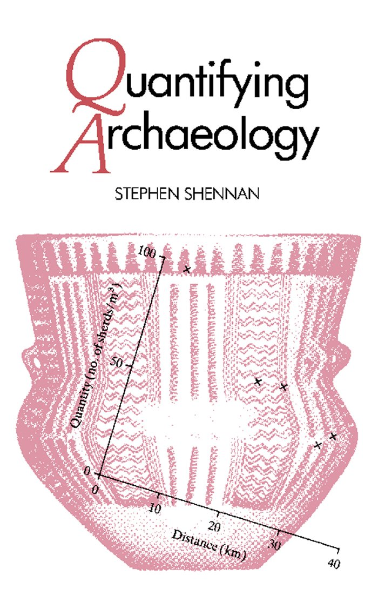
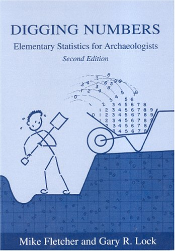
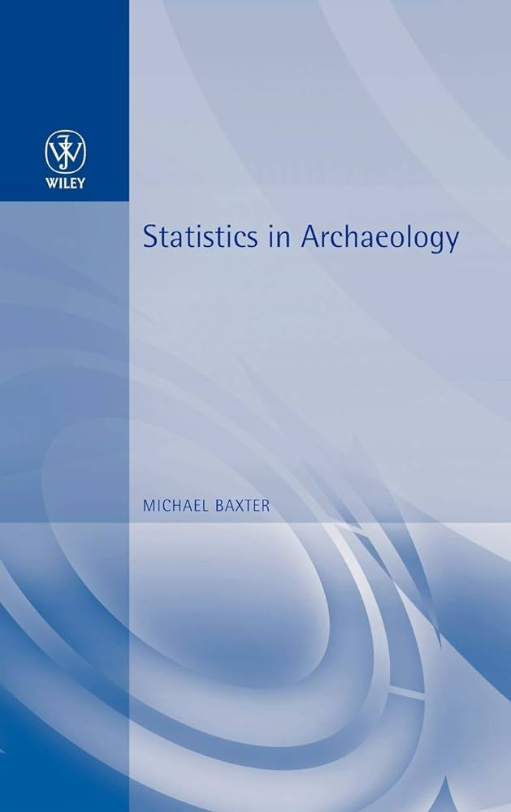
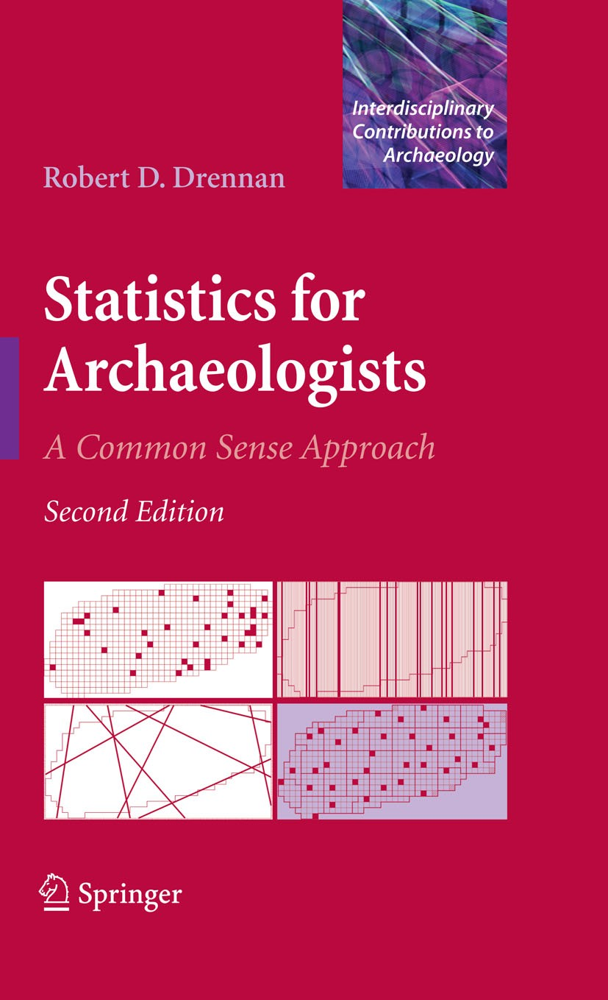
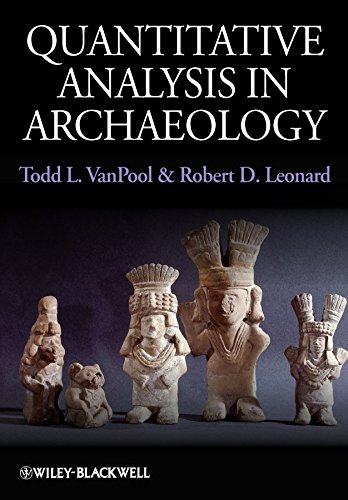
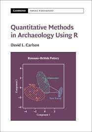

Course introduction
Basic information
- Lectures/seminars each Wednesday, 12:00 – 13:40, room L11.
- Try not to miss the seminars/lectures please.
- Hybrid teaching or recording the lectures is not planned.
- Be active and curious, the lectures are mere introductions and most of the work is up to you.
- Bring your own laptop or use the computers in the room.
Schedule
See details here…
Lecturers
Petr Pajdla
Archaeological information system of the Czech republic (AIS CR)
Institute of Archaeology, Czech Acad Sci, Brno
Peter Tkáč
Department of Archaeology and Museology, Masaryk University
Institute of Botany, Czech Acad Sci
And what about you?
Objectives
At the end of the course, you will be able to:
- understand basic statistics terminology,
- create plots for one and two variables,
- calculate and interpret summary statistics,
- manipulate and prepare data for various types of analyses,
- analyze range of data types,
- analyze spatial and temporal data,
- work in the R programming language and environment.
Prerequisites
- Not to be afraid of learning a scripting language.
- Elementary knowledge of mathematics/statistics.
Where to review basics of maths/stats?
If you feel usure in any of the topics we cover, it is possible you’ll find these courses explaining basics in maths and stats helpful:
Projects
- During the course, you will work on a data analysis project of your own, see more details here.
Resources
Quantitative methods in archaeology
     
- See section Resources for more details…
- Books already available in study materials.
Resources
Learning R


- See section Resources for more details…
- Books available online.
Why maths in archaeology?
Brainstorming
Assignments
Read chapters Quantifying Archaeology in Quantitative Analysis in Archaeology book by VanPool, T. L. and Leonard, R. D. (2011).
Optionally, read Introductions in:
- Quantifying archaeology book by Stephen Shennan, and/or
- Quantitative Methods in Archaeology book by David L. Carlson
See Resources for more details. These books will give you a general overview on why to use quantitative/computational methods in archaeology.